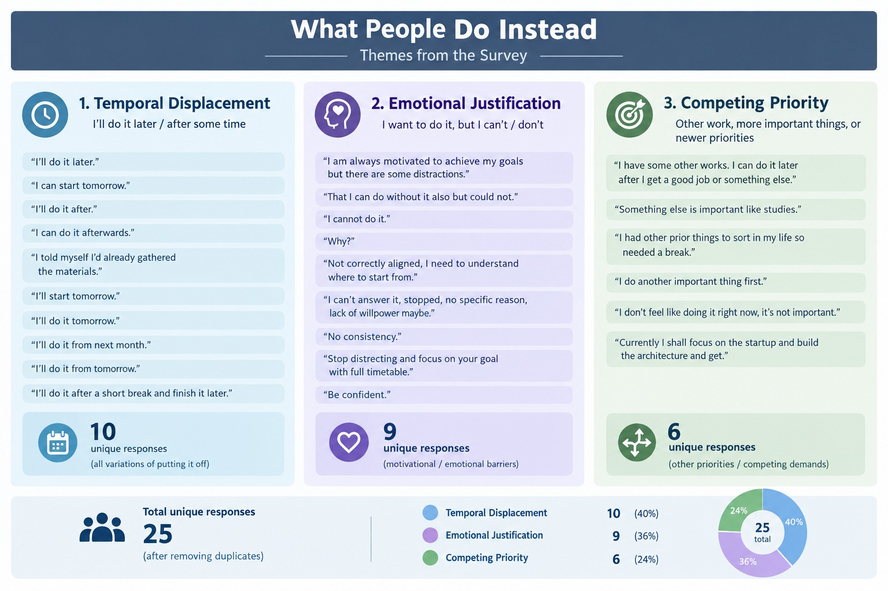
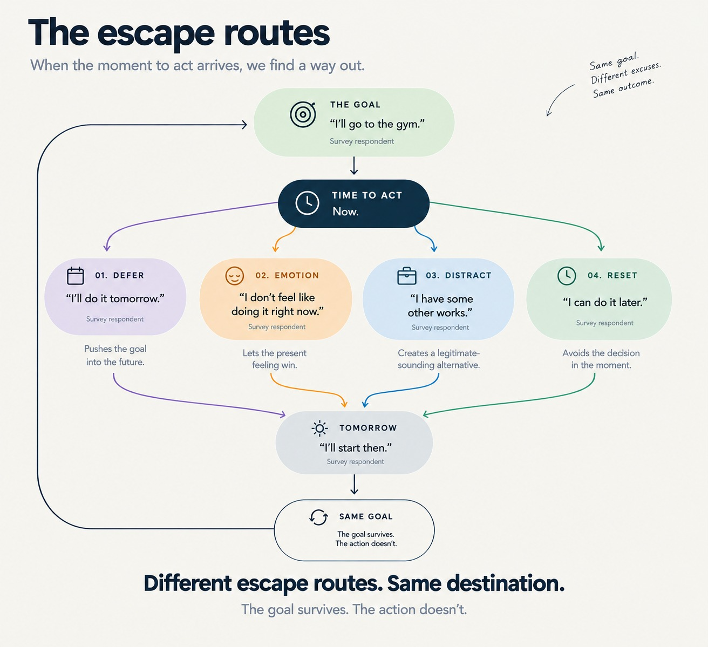
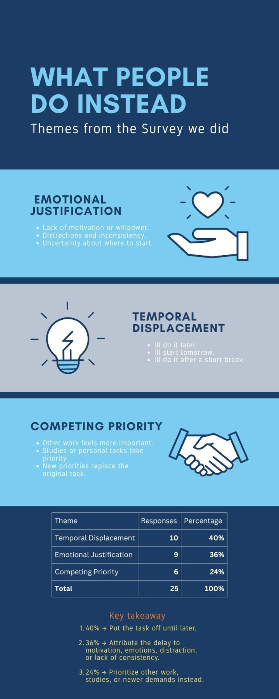

01
Psychology
↗
Goal Domain Breakdown
What people are actually trying to achieve.

User research & behavioral insights into why intentions collapse between setting a goal and actually following through.
An empirical investigation into goal-setting dynamics, procrastination triggers, accountability mechanisms, and loss-aversion incentives across demographic cohorts.
Explore the behavioral patterns emerging from the survey.
What people are actually trying to achieve.
Where momentum begins to disappear.

How important goals feel before execution.

Who people turn to when consistency matters.

Does being observed change behavior?

The domains where respondents want change.

Who participated in the research?

The age profile of the respondent pool.

Confidence at the moment a goal begins.

The gap between intention and execution.

Why progress breaks down after the initial push.

What kind of consequence feels motivating?

What actually creates motivational pressure?

What people fear when they fail to follow through.

Alternative behaviors that replace goal-directed action.

How people psychologically escape difficult goals.

Additional behavioral themes from the research.

Try another keyword or reset the filters.